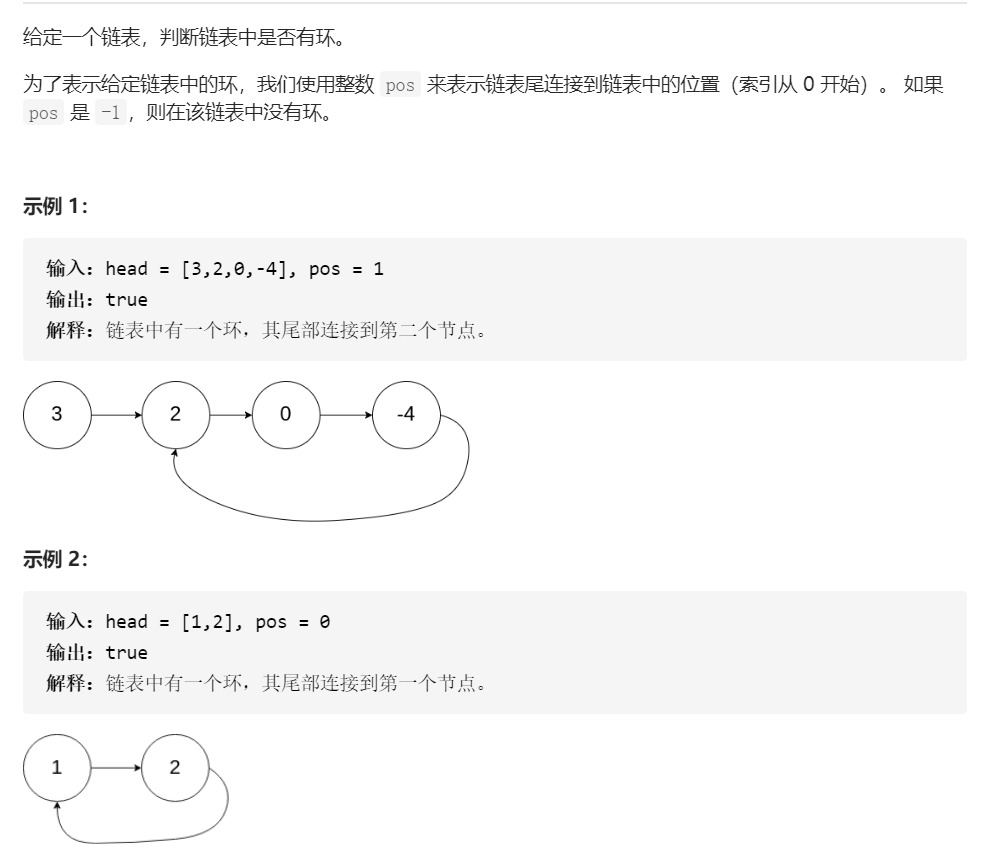

链表专题
2021-08-03
1 链表问题
必考题
1.1 删除链表的倒数第N个节点
给定一个链表，删除链表的倒数第 n 个节点，并且返回链表的头结点。
示例：
给定一个链表: 1->2->3->4->5, 和 n = 2.
当删除了倒数第二个节点后，链表变为 1->2->3->5. 说明：
给定的n保证是有效的。
进阶：
你能尝试使用一趟扫描实现吗？
- 可以考虑快慢指针来实现各种位置删除的链表
能不能用1次遍历解决这个问题呢？这里我们运用到解决这类线性列表的数据结构题目一个高频技巧，双指针。 为了方便，在原有链表前面设置一个哑结点，哑结点的好处在于，因为这里我们是要删除一个结点，所以我们可以定位到被删除结点的前置结点，然后将前置结点的后续指针指向被删除结点的后续结点，则可完成删除。
建立两个链表，l1先从第一个节点访问到第n个节点，然后l1和l2同时进行扫描，当l1扫描到链表尾时，l2到倒数第n个节点。
我们设置两个指针，两个指针初始状态都指向哑结点，指针fast 先走n步，然后指针fast和指针slow同步往前继续遍历链表，直至fast的后续结点为空，此时指针slow到达被删除结点的前置结点。belinda
1.定义一个头结点，指向链表的第一个结点 2.快慢指针指向头结点 3.快指针先走n步 4.快慢指针一起走，直到快指针走到链表尾 5.慢指针后一位链接为其后一位的后一位（实现截断连接） 6.返回头结点的后一位结点。Huster2018
# Definition for singly-linked list.
# class ListNode(object):
# def __init__(self, x):
# self.val = x
# self.next = None
class Solution(object):
"""
:type head: ListNode
:type n: int
:rtype: ListNode
"""
def removeNthFromEnd(self, head: ListNode, n: int) -> ListNode:
Node = ListNode(None) #哑铃节点
Node.next = head
first,slow = Node,Node
for i in range(n):
first = first.next
while first.next != None:
first = first.next
slow = slow.next
slow.next = slow.next.next #指向删除节点的后续位置
return Node.next1.2 环形链表
 示例 3：
输入：head = [1], pos = -1 输出：false 解释：链表中没有环。
题解:也是快慢指针的问题
通过使用具有不同速度的快、慢两个指针遍历链表，空间复杂度可以被降低至O(1)。慢指针每次移动一步，而快指针每次移动两步。
如果列表中不存在环，最终快指针将会最先到达尾部，此时我们可以返回 false。
现在考虑一个环形链表，把慢指针和快指针想象成两个在环形赛道上跑步的运动员（分别称之为慢跑者与快跑者）。而快跑者最终一定会追上慢跑者。这是为什么呢？考虑下面这种情况（记作情况 A）- 假如快跑者只落后慢跑者一步，在下一次迭代中，它们就会分别跑了一步或两步并相遇。
其他情况又会怎样呢？例如，我们没有考虑快跑者在慢跑者之后两步或三步的情况。但其实不难想到，因为在下一次或者下下次迭代后，又会变成上面提到的情况 A。
1.3 反转链表
反转一个单链表。
示例:
输入: 1->2->3->4->5->NULL 输出: 5->4->3->2->1->NULL
# Definition for singly-linked list.
# class ListNode:
# def __init__(self, x):
# self.val = x
# self.next = None
class Solution:
def reverseList(self, head: ListNode) -> ListNode:
rev,p=None,head
while p:
rev,rev.next,p=p,rev,p.next
return rev写一个过程
迭代指针：p = head、结果指针：res = none
以1->2->3->4->5为例：
过程：
res:None
第一层循环
res:1->2->3->4->5 res = p
res:1->None res.next = res
p:2->3->4->5 p = p.next
第二层循环
res:2->3->4->5 res = p
res:2->1->None res.next = res
p:3->4->5 p = p.next
第三层循环
res:3->4->5 res = p
res:3->2->1->None res.next = res
p:4->5 p = p.next
第四层循环
res:4->5 res = p
res:4->3->2->1->None res.next = res
p:5 p = p.next
第五层循环
res:5 res = p
res:5->4->3->2->1->None res.next = res
p:None p = p.next
1.4 排序链表
在O(n log n) 时间复杂度和常数级空间复杂度下，对链表进行排序。
示例 1:
输入: 4->2->1->3 输出: 1->2->3->4 示例 2:
输入: -1->5->3->4->0 输出: -1->0->3->4->5
因此这个题就是考归并排序的
递归排序三部曲：
- 1，快慢指针找中点；
- 2，递归调用mergeSort，
- 3，合并两个链表
这个答案也能通过
class Solution:
def sortList(self, head: ListNode) -> ListNode:
if not (head and head.next): return head
pre, slow, fast = None, head, head
while fast and fast.next:
pre, slow, fast = slow, slow.next, fast.next.next
pre.next = None
return self.mergeTwoLists(*map(self.sortList, (head, slow)))
def mergeTwoLists(self, l1: ListNode, l2: ListNode) -> ListNode:
if l1 and l2:
if l1.val > l2.val: l1, l2 = l2, l1
l1.next = self.mergeTwoLists(l1.next, l2)
return l1 or l2bug
我这个事件复杂度为o(n)的为啥报错
class Solution:
def sortList(self, head: ListNode) -> ListNode:
t = []
cur = head
while cur:
t.append(cur.val)
cur = cur.next
return t.sort()至此，双指针的链表题都齐了
下面开始单指针的
1.5 回文链表
请判断一个链表是否为回文链表。
示例 1:
输入: 1->2 输出: false 示例 2:
输入: 1->2->2->1 输出: true
1.6 合并两个有序链表
将两个升序链表合并为一个新的 升序 链表并返回。新链表是通过拼接给定的两个链表的所有节点组成的。 示例：
输入：1->2->4, 1->3->4 输出：1->1->2->3->4->4
思路
- 判断两个链表是否存在，否则返回另一个
- 比较两个链表结点的值
# Definition for singly-linked list.
# class ListNode:
# def __init__(self, val=0, next=None):
# self.val = val
# self.next = next
class Solution:
def mergeTwoLists(self, l1: ListNode, l2: ListNode) -> ListNode:
if not l1:
return l2
if not l2:
return l1:
while l1 and l2:
if l1.val<=l2.val:
l1.next=self.mergeTwoLists(l1.next,l2)
return l1
else:
l2.next=self.mergeTwoLists(l1,l2.next)
return l2
1.7 删除链表中的结点
请编写一个函数，使其可以删除某个链表中给定的（非末尾）节点，你将只被给定要求被删除的节点。
示例 1:
输入: head = [4,5,1,9], node = 5 输出: [4,1,9] 解释: 给定你链表中值为5的第二个节点，那么在调用了你的函数之后，该链表应变为 4 -> 1 -> 9. 示例 2:
输入: head = [4,5,1,9], node = 1 输出: [4,5,9] 解释: 给定你链表中值为1的第三个节点，那么在调用了你的函数之后，该链表应变为 4 -> 5 -> 9.
node是待删除的结点，因此就让指向node的指针指向node的下一个结点就好了
1.8 判断链表中是否有环
1.9 限制时间复杂度输出链表的中间值
主要思想是快慢指针
快指针先走2步，那慢指针走一步，当快指针走到末尾的时候，慢指针刚好走到中间。